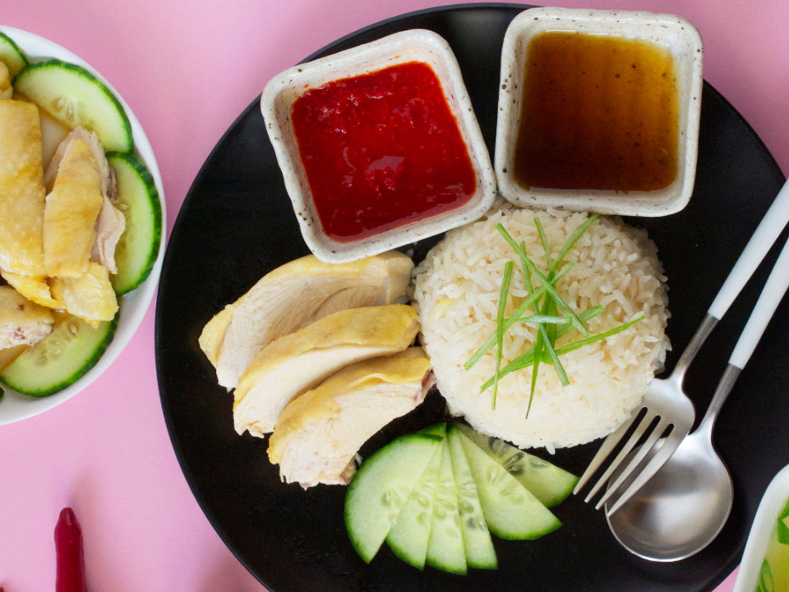

Home
Khao Piak
Crab Omelette
Hainanese Chicken Rice

Hainanese chicken rice has become a famous dish, but it's especially popular in South East Asian countries like Singapore, Malaysia and Thailand. There are large populations of Chinese in these countries, and this dish crossed borders along with Chinese migrant workers.
Ingredients:
For the Chicken:
- 3 lb whole chicken, giblets removed
- 1/4 cup kosher salt, divided
- 4 inch pieces fresh ginger, peeled and cut into 1/4-inch (6 mm) slices
- 1 bunch fresh scallion
- 1 gal cold water, plus more as needed
- 2 tablespoons sesame oil
For the Rice:
- 1/4 cup sesame oil
- 2 tablespoons chicken fat, chopped
- 2 cloves garlic, minced
- 1 tablespoon fresh ginger, minced
- 1 teaspoon kosher salt
- 2 cups long grain rice, rinsed and drained
- 2 cups reserved chicken poaching broth
For the Chili Sauce:
- 2 tablespoons sambal
- 2 tablespoons sriracha
- 2 teaspoons sugar
- 1 tablespoon garlic, minced
- 1 tablespoon fresh ginger, minced
- 1 tablespoon lime juice
- 2 tablespoons reserved chicken poaching broth
For the Ginger Garlic Sauce:
- 2 tablespoons fresh ginger, grated
- 2 tablespoons garlic, finely minced
- kosher salt, to taste
- 3 tablespoons peanut oil
- 1 tablespoon rice vinegar
For the Soy Dipping Sauce:
- reserved fried garlic and ginger
- 1 tablespoon oyster sauce
- 3 tablespoons dark sweet soy sauce
- 1 tablespoon light soy sauce
- 2 tablespoons reserved chicken poaching broth
- 2 cucumbers, thinly sliced, for serving
- 1 bunch fresh cilantro, for serving
Directions:
-
To clean the chicken, rub all over with a handful of kosher salt, getting rid of any loose skin. Rinse the chicken well inside and out. Pat dry with paper towels.
-
Remove any excess fat from the chicken and set aside for later.
-
Season the chicken generously with salt. Stuff the chicken cavity with the ginger slices and scallions.
-
Place the chicken in a large stock pot, cover with cold water by 1 inch (2 cm), and season with salt to taste.
-
Bring to a boil over high heat, then immediately reduce the heat to low to maintain a simmer. Cover and cook for about 30 minutes, or until the internal temperature of the chicken reaches 165°F (75°C). Remove the pot from the heat.
-
Remove the chicken from the pot, reserving the poaching liquid for later, and transfer to an ice bath for 5 minutes to stop the cooking process and to keep the chicken skin springy. Discard the ginger and green onion.
-
After it's cooled, pat the chicken dry with paper towels and rub all over with sesame oil. This will help prevent the chicken from drying out.
-
In a large wok or skillet, heat ¼ cup (60 ml) of sesame oil over medium-high heat. Add 2 tablespoons of reserved chopped chicken fat, the garlic, ginger, and salt, and fry until aromatic, about 10 minutes.
-
Reserve 1/4 of the fried garlic mixture, then add the rice to the remaining fried garlic and stir to coat. Cook for 3 minutes.
-
Transfer the rice to a rice cooker and add 2 cups (480 ml) of reserved poaching broth. Steam the rice for 60 minutes, or until tender.
-
While the rice is cooking, carve the chicken for serving.
-
Make the chili sauce: combine the sambal, Sriracha, sugar, garlic, ginger, lime juice, and chicken broth in a small bowl and stir to incorporate.
-
Make the ginger garlic sauce: in a small bowl, combine the ginger, garlic, salt, peanut oil, and rice vinegar, and stir to incorporate.
-
Make the soy sauce: in a small bowl, combine the reserved fried garlic and ginger with the oyster sauce, dark soy sauce, light soy sauce, and chicken broth, and stir to incorporate.
-
Serve the sliced chicken with the rice, dipping sauces, sliced cucumbers, and fresh cilantro.
Top
Khao Piak
Crab Omelette